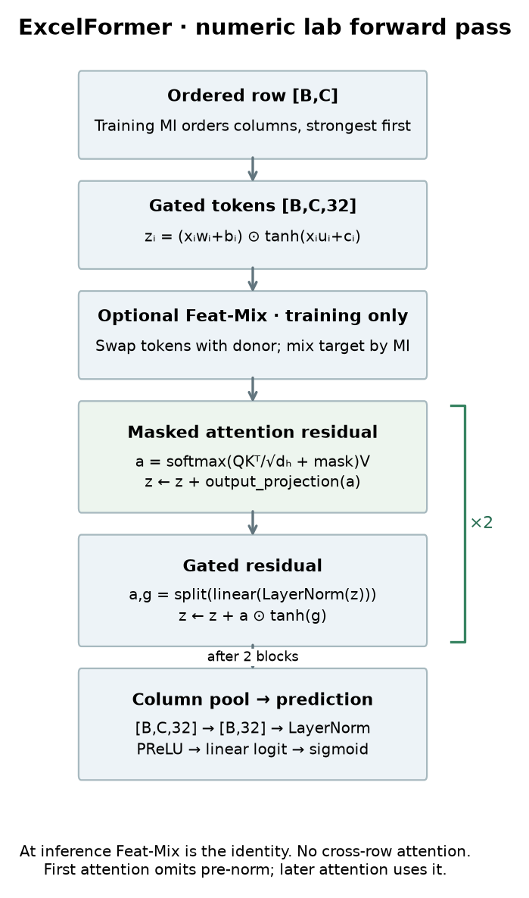
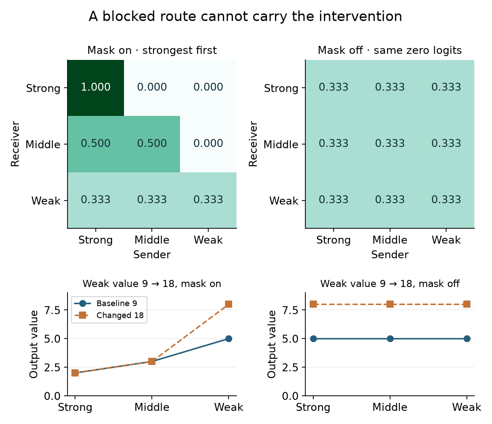
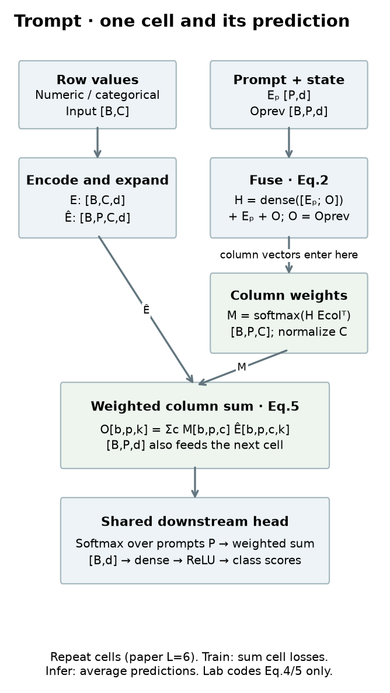
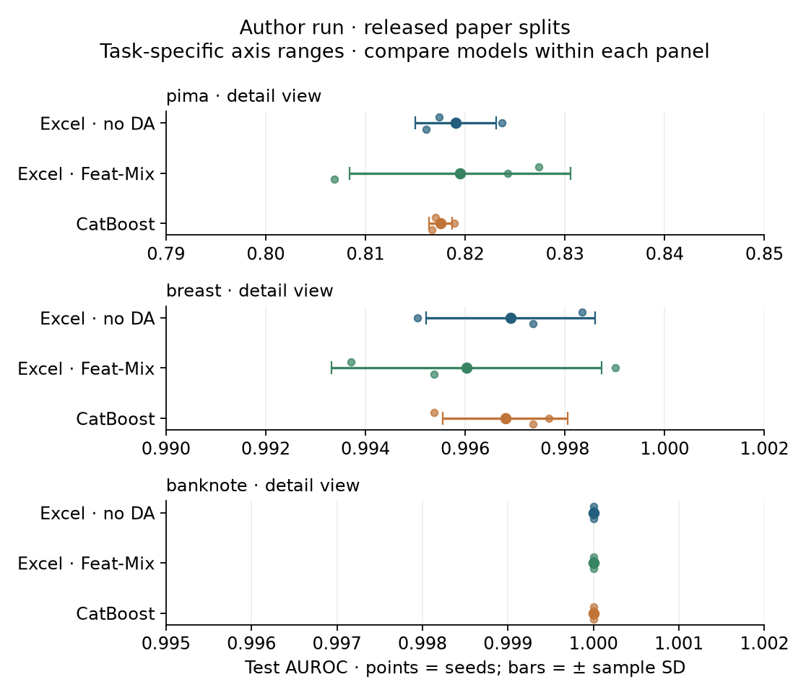
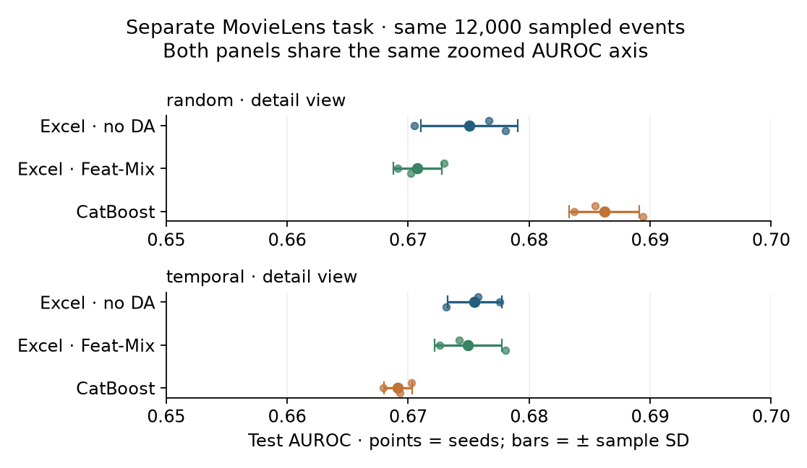

Year 2 · Quarter 1 · Lesson 049
ExcelFormer & Trompt
Understand the mechanism. Audit the scope of the claim.
Your win: turn a headline about beating trees into a statement with a model variant, dataset population, split, metric, search budget, and uncertainty. Then support that statement with an executable audit.
← L048: explicit crosses · Claim-audit reference · Prepared notebook
Recall before reading
1. First, find out what was actually claimed
A GBDT, or gradient-boosted decision tree ensemble, adds trees that improve a prediction objective. ExcelFormer and Trompt are neural alternatives for rows of a table. Their architectural ideas are useful even when a particular experiment favors trees. Our mission requires strong single-table baselines before attributing a relational model’s gains to relationships between entities.
The curriculum groups these papers under “GBDT-surpassing claims.” That is a useful question, but an inaccurate shared conclusion. ExcelFormer’s v5 paper argues for broad superiority in its evaluated settings. Trompt’s abstract says it is comparable to tree-based models. Its regression discussion includes groups where trees remain ahead. Neither result quantifies performance on every future database. Sources: ExcelFormer §6; Trompt §4.2.
Three activities, three claims: reading a paper establishes what its authors report; matching a released forward pass checks a specified implementation path; training a model checks a particular protocol. None automatically establishes the other two.
Today’s implementation scope is explicit: a complete numeric ExcelFormer prediction path and learning loop, plus Trompt’s feature-weight and aggregation equations. We do not train a full Trompt encoder. Comparing two full architectures and reconstructing both large benchmarks would obscure the single skill here: making claims commensurate with evidence. The Trompt benchmark remains cited and unreplicated.
2. Model architecture — ExcelFormer
Let B be the number of rows in a batch, C the number of columns, and d the width of a feature embedding. An embedding converts a scalar or category into a learned vector. The local numeric variant takes an array [B,C] and creates one token per column, yielding [B,C,d]. A token here is a feature vector, not a word.

The token for feature i is (xᵢwᵢ+bᵢ) ⊙ tanh(xᵢuᵢ+cᵢ). Both parentheses are d-dimensional learned affine maps. The symbol ⊙ multiplies corresponding coordinates; tanh bounds its input between −1 and 1, acting as a gate that can suppress or reverse a coordinate. The first factor supplies values and the second gates them. A later gated layer similarly splits a 2d-dimensional linear output into two halves and multiplies one half by tanh of the other. §3.2.
Each block mixes feature tokens through attention and adds the result to the incoming tokens. This residual connection preserves a direct information path. Then a gated update acts within each feature token, also with a residual. Layer normalization rescales a token’s coordinates using their mean and variance and learns a scale and offset. The released pre-normalization path omits the first attention normalization; the implementation preserves that detail.
The prediction head learns a C→1 weighted pooling across columns, leaving [B,d], then applies LayerNorm, a learned-slope rectifier (PReLU), and a d→1 linear map. The resulting logit is an unrestricted score. Sigmoid converts it to a probability; the training loss uses logits directly for numerical stability. The pooling can read every feature, so blocking an attention route does not make the final prediction independent of the weaker feature.
The paper uses target-based encoding for categories and quantile transformation for numeric inputs. Our three author-split tasks are numeric, so we use their released prepared values directly. Our separate MovieLens probe uses a different, disclosed encoding. These preprocessing choices are part of the model’s evidence, not interchangeable housekeeping. §3.3.
3. Semi-permeable attention: trace the direction
Ordinary attention forms a query Q for each receiver, a key K for each sender, and a value V to transmit. For one head of width dₕ, similarities are QKᵀ/√dₕ. Softmax exponentiates the scores and divides by their sum across senders, giving nonnegative weights that sum to one. Multiplying these weights by V creates one weighted sum per receiver.
M is a permission mask. The paper blocks position (i,j) when feature i is more informative than feature j. Row i is the receiver; column j is the sender. The blocked route is therefore weaker sender → stronger receiver. With features sorted strongest first, the released implementation allows j≤i, a lower triangle including the diagonal. One broad sentence in the introduction reverses the verbal direction; Eq.2, its adjacent explanation, and the released mask agree on this interpretation. §3.1, Eq.1–2; pinned released code.
Mutual information (MI) measures statistical dependence: how much observing a feature reduces uncertainty about the target. Here it is an estimated, univariate, training-set statistic, not a causal effect or a guarantee of usefulness in interactions. The mask is fixed after fitting the training ordering; attention weights inside allowed positions remain learned and row-dependent. Never estimate this ordering from validation/test labels.
Predict: with equal logits and values [2,4,9], what happens to the strongest receiver if the last value doubles? Test your answer below, then remove the mask while keeping the logits fixed.
The masked outputs are [2,3,5]: the first receiver reads only 2, the second averages 2 and 4, and the third averages all three. Changing 9→18 gives [2,3,8]. Without the mask, every output changes from 5→8. These are synthetic arithmetic examples, not learned importance scores. The final model still pools the weak token, so its prediction can change even when the strong token’s attention output cannot.
Static snapshot for print and review

Ties require a declared choice. Eq.2 permits both directions between equal-importance features. The released positional triangle selects one direction even for ties. We reproduce that positional behavior after stable sorting and record it as a paper/code distinction. With noisy MI estimates, a tiny change in ordering can change the allowed graph.
Interaction-attenuated initialization starts mixing weights small so the residual path initially dominates. Multiplying a weight’s standard deviation by 0.01 multiplies its variance by 0.0001. The paper describes attenuating SPA broadly; the released code attenuates Q/K/V and the gated update, while its attention output projection has ordinary initialization. The local model follows the released path. Neither small initial weights nor a triangular mask proves eventual generalization superiority.
4. Feat-Mix: which donor supplies the information?
Data augmentation creates modified training examples. Feat-Mix swaps whole feature tokens between two donor rows. Let mᵢ=1 retain feature i from row A and mᵢ=0 take it from B. If Iᵢ is that feature’s nonnegative training MI, the share assigned to A is:
For MI values [6,3,1], keeping only the first feature gives λ=0.6, not 1/3. If donor labels are 1 and 0, the mixed target is 0.6. A soft target between zero and one is permitted by binary cross-entropy. It represents a training heuristic; it is not a newly observed outcome. §4, Eq.7–8.
Our sampler draws a retention probability from Beta(0.5,0.5), then independent Bernoulli choices per row and feature. Beta here is a distribution over probabilities; its two parameters favor extreme retention shares. This is a documented sampler choice, not a verified match to every detail of the released augmentation code. If total MI is zero, Eq.8 has a zero denominator; the lab explicitly falls back to the retained-feature fraction.
Hid-Mix, the paper’s other augmentation, exchanges embedding coordinates across donors, applying the same coordinate mask across feature tokens. Its label interpolation differs from Feat-Mix’s information weighting. We explain the distinction but do not implement or evaluate Hid-Mix today. Do not label our Feat-Mix result as the paper’s “Hid-Mix,” “Mix Tuned,” or “Fully Tuned” result.
Both augmentations are training-only. No donor row or label is needed at inference. This differs from SAINT’s inference-time companion context and from reading a relational neighborhood at prediction time.
5. Model architecture — Trompt
Trompt uses learned column embeddings to represent table structure and learned prompt embeddings to query that structure. These are trainable vectors, not text instructions. There is no pretrained language model in this architecture. Both embedding sets are shared across input rows; dependence on an individual row enters through the previous cell’s representation. §3.

A cell fuses the broadcast prompt Eₚ with the preceding output Oprev:
M = softmax(H Ecolumnᵀ) [B,P,C]
Concatenation puts two d-wide vectors side by side; the dense map reduces 2d back to d. Each prompt then scores every column. Softmax runs over C, the column axis, so each prompt gets its own distribution over columns. The paper’s Eq.4 does not divide these scores by √d; importing that factor from Transformer attention would change the specified operation. The weights can be row-specific because H can be row-specific, even though Ecolumn is shared.
Feature values take a separate route: numeric dense maps or category lookups produce Efeature [B,C,d], and a learned expansion provides a prompt axis, giving Ê [B,P,C,d]. The full paper cell includes normalization and residual machinery on this path. We do not silently replace it with a broadcast and call that a complete Trompt implementation.
Indices b,p,c,k identify a row, prompt, column and embedding coordinate. The sum removes the column axis. It preserves the prompt axis, letting different prompts retain different summaries. These are the two live implementation exercises: compute M correctly, then sum the weighted expanded features over the correct axis. §3.1, Eq.1–5.
In this worked example, column vectors are [1,0], [0,1], [0,0] and one fused query is [t,0]. At t=0 the weights are uniform and the output from values [2,4,9] is 5. At t=2 the logits are [2,0,0], the weights are approximately [0.787,0.107,0.107], and the output is 2.959. Numbers displayed to three decimals are rounded; computations use full precision.
First-cell subtlety: if Oprev starts identically for all rows, the initial weights are identical across rows. Values still differ, so the first output can differ; later fusion can then produce row-specific weights. The notebook deliberately uses a shared zero initial state to test this conditional statement. That test is not evidence of the full released initialization or architecture.
The downstream head uses another softmax, this time over P, the prompt axis, to combine prompt representations. Two dense layers with ReLU produce class scores. The same downstream module serves multiple cells. Training sums the individual cell losses; inference averages cell predictions in Eq.9. Our untrained routing probe never substitutes for this complete training scheme. §3.2.
6. Audit the protocol before comparing the numbers
A protocol specifies which information is available, how data are partitioned, how settings are chosen, and how performance is measured. A comparison is meaningful only relative to that protocol. Record the following before training:
| Question | ExcelFormer v5 | Trompt v2 |
|---|---|---|
| Which population? | 96 small and 21 larger tabular datasets. | Grinsztajn45 with medium/large and numeric/heterogeneous groups; additional suites in appendices. |
| Which partition? | Random 80/20 outer split; 20% of the training portion reserved for validation: 64/16/20 overall. | Benchmark prepared IID data; its stated scope does not establish future-time transfer. |
| Which selection budget? | Default, augmentation-tuned, and fully tuned variants are distinct. Tree tuning expands to 500 trials; do not dismiss the baseline as untuned. | 40 effective Trompt combinations. Results are duplicated to avoid truncating other models’ benchmark search traces. |
| Which metric? | AUROC for binary classification, accuracy for multiclass, negative RMSE for regression; ranks aggregate tasks. | Accuracy and R², with benchmark normalization/search curves. |
| What does this permit? | A claim about these tasks, model variants and budgets. | A scoped comparability claim with subgroup exceptions. |
Primary audit reading: ExcelFormer §6.1, Trompt Appendix A, and Trompt Appendix F. Read these before the headline results.
Unique configurations are not plotted entries. Repeating results from 40 evaluated settings does not create 300 independent model fits or 300 new settings. That observation is an accounting distinction, not proof of misconduct or invalid scores. Ask what each x-axis unit counts and what selection happened before it was plotted. Equal trial counts also need not mean equal compute: model sizes, epochs, early stopping and parallel hardware differ.
Dataset names are not independence guarantees. ExcelFormer’s appendix contains several diabetes and similarly named dataset entries. Similar names alone do not prove duplicate rows. An audit should compare provenance and row fingerprints before treating each entry as independent evidence. Our local rank summary uses three distinct tasks, including just one Pima variant.
Metric identity matters. AUROC measures positive-vs-negative score ordering, counting tied pairs as half. Accuracy measures the fraction of correct thresholded labels. Log loss measures probability quality and penalizes confident mistakes. A higher AUROC can coexist with lower accuracy. We select neural checkpoints by validation log loss, report test AUROC and log loss, and do not cherry-pick the test metric afterward.
7. The experiment we actually ran
Held fixed: the authors’ released Pima-Indians-Diabetes, Breast Cancer Dataset, and Swiss-banknote-conterfeit-detection splits; prepared numeric values; model seeds 0/1/2; and per-task evaluation rows. Files are checked by SHA-256, a content fingerprint. MI ordering uses training labels only. We do not reconstruct or independently certify the upstream preparation that created those downloaded arrays.
Varied: numeric ExcelFormer without augmentation, the same model with our Feat-Mix sampler, and a CatBoost comparator. Each neural arm uses d=32, four heads, two blocks, dropout 0.1, AdamW at 0.001 with no weight decay, batches of 64, at most 30 epochs, and validation patience 12. CatBoost uses at most 300 trees, depth 6 and learning rate 0.05, selecting by validation log loss. These are fixed local budgets, not equal wall-clock budgets or the paper’s tuning search.
| Task | Excel · no DA | Excel · Feat-Mix | CatBoost |
|---|---|---|---|
| pima | 0.8191 ± 0.0041 | 0.8195 ± 0.0111 | 0.8175 ± 0.0012 |
| breast | 0.9969 ± 0.0017 | 0.9960 ± 0.0027 | 0.9968 ± 0.0013 |
| banknote | 1.0000 ± 0.0000 | 1.0000 ± 0.0000 | 1.0000 ± 0.0000 |

Mean ranks: Excel no DA 1.667; Feat-Mix 2.000; CatBoost 2.333. Friedman p=0.607; Nemenyi critical difference=1.914. This three-task experiment detects no overall difference. Banknote has AUROC 1.0 for all arms on this small test split; that is saturation, not proof of perfect future predictions. The breast task also has very little headroom.
The error bars show sample standard deviation across three model seeds, not confidence intervals over future populations. The JSON also reports 95% t intervals for the seed mean, conditional on one fixed split. A rank orders models within each task, avoiding averaging metrics with incompatible scales. We average task ranks and calculate a Friedman rank test plus the Nemenyi critical difference; with only three datasets, this is a low-power descriptive exercise. Failure to detect a difference does not establish equivalence.
Reproducibility files: scores, predictions, histories, environment and split indices; released forward/gradient check. With copied weights, our specified ExcelFormer path matches the pinned released implementation exactly in double precision, including input gradients. The reference executes the released model classes with a small adapter supplying their tanh-gated activation; we do not install the full original training environment. This verifies the numeric pre-normalization, no-compression evaluation path; it does not establish augmentation, optimizer, categorical or all-variant parity.
8. Change the deployment question: predict later events
A random split asks about another observation mixed with the observed period. A temporal split trains on earlier observations, selects settings on a later validation interval, and evaluates on the latest interval. It changes the target population and often entity coverage. It is not just a more difficult version of the identical statistical question.
Our separate transfer probe reuses the real MovieLens-1M timestamps from L048. Remove rating 3; labels are zero for 1–2 and one for 4–5. Sample 12,000 events without consulting their labels using seed 49. The random regime uses stratified 64/16/20 splits with seed 49. The temporal regime assigns whole timestamp groups around the 64% and 80% time quantiles, so no timestamp straddles a boundary.
Inputs are age and training-only category frequencies for user, movie, gender, occupation and ZIP. A frequency is the share of training events with that category; unseen categories map to zero. Quantile transformation and MI ordering fit only the corresponding training partition. Category IDs are never treated as measured magnitudes. Ratings and timestamps are excluded from inputs. We use the dataset’s demographic snapshot; its exact historical availability is not verified, so this is a time-transfer demonstration, not a certified production point-in-time dataset.
Frequency encoding deliberately loses category identity and is not the paper’s target encoder. Both regimes use the same events, model budgets and feature-building rule, but fit their transforms independently on the proper training rows. Their test sets differ. A score change therefore combines distribution, composition, representation and fitted-model effects; it is not a paired causal estimate of “the effect of time.”
| Task | Excel · no DA | Excel · Feat-Mix | CatBoost |
|---|---|---|---|
| random | 0.6751 ± 0.0040 | 0.6708 ± 0.0020 | 0.6862 ± 0.0029 |
| temporal | 0.6755 ± 0.0022 | 0.6750 ± 0.0028 | 0.6692 ± 0.0012 |

Here CatBoost leads under random splitting, while the neural arms lead on the later interval. This is a measured ranking reversal for our fixed pipeline, not a universal temporal advantage. Excel no DA barely changes in mean AUROC; a temporal split does not mechanically lower every model’s score.
Do not add random and temporal MovieLens as two independent datasets to the three-task Friedman analysis. They share an underlying source. A result here says something about our transferred pipeline; it cannot refute or reproduce either paper’s original benchmark.
9. Move closer to the paper, then keep the ledger honest
The next step uses the same visible implementation, the authors’ Pima split, d=256, 32 heads, three blocks, dropout 0.3 and learning rate 0.0001. The closer preset caps training at 100 epochs with patience 32, uses batches of 256, and allows 1,000 CatBoost trees. The longer paper preset raises the caps to 1,000 epochs and 4,096 trees; its name describes a capacity/budget option, not completed paper replication. Neither runs the paper’s tuning search.
The specific cited target is the appendix row Pima-Indians-Diabetes: Feat-Mix default AUROC 0.8356 and tuned CatBoost 0.7528. Other similarly named Pima rows have different scores. These are the authors’ reported five-run results, not our outputs. ExcelFormer Appendix G.
| Task | Excel · no DA | Excel · Feat-Mix | CatBoost |
|---|---|---|---|
| pima | 0.8383 ± 0.0099 | 0.8261 ± 0.0057 | 0.8175 ± 0.0012 |
Larger-run verdict: INCOMPARABLE. Width, depth and attention heads align more closely with the paper, but a single released split, chosen epoch cap and batch size, augmentation sampling details and absent hyperparameter search prevent an exact table reproduction. Selected weights, predictions and histories are saved under labs/data/cache/l049-closer/; regenerate them with the runner.
Conclusion ledger: verified here = specified forward path, equation probes, and measured local runs; paper claim = cited benchmark results; scale-up = the larger Pima attempt with its own configuration and artifacts. A close score with a different protocol remains INCOMPARABLE as an exact reproduction. It may be numerically close; that is a different sentence.
The lab includes a gated Colab next step and a Modal T4 operator. Both use the same runner, save selected weights and predictions, resume completed seeds, and reject incompatible cached runs. The 96/21-task ExcelFormer suite, its tuning search, and the full Trompt benchmark remain NOT_RUN.
Lab and exit
Student notebook · Read the prepared lab · Colab after repository publication.
Implement masked attention, Trompt’s two axis-sensitive equations, and the Feat-Mix target. Then run the actual model through your functions, audit published scores on the correct task row, and inspect the temporal comparison. The notebook contains readable model blocks, training loop, checks, figures visible before execution, and a larger-run next step.
EXIT: submit a claim-audit note identifying one exact paper result, its supported scope, the local comparison with uncertainty, the time-transfer limitation, and the outstanding reproduction gaps. Include one sentence about what this means for the relational thesis: beating a weak flat-table baseline cannot establish the value of relational structure.
Primary reading assignment: ExcelFormer §3.1, §6.1 and the exact Appendix G row; then Trompt §3.1 and Appendix A.4. Read for the direction of information flow and what a tuning trial actually counts. Ask a follow-up whenever a tensor axis, source discrepancy, statistical conclusion or reproduction verdict is unclear; paste your calculation or EXIT note so we can work through it.
Next: L050 — Q1 checkpoint: FT-Transformer versus tuned XGBoost under an identical, multi-dataset protocol.